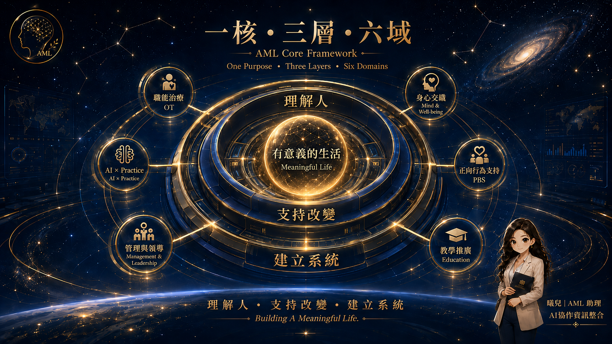

Allen Mind Lab 不是六個彼此分離的主題，而是一套從人出發的整合架構。 我們從生活、參與與內在狀態理解人，透過專業實踐支持改變， 再以教育、管理與 AI，讓好的方法能被學習、被承接，也被延伸。
一個核心：有意義的生活。三個層次：理解人、支持改變、建立系統。 六個領域彼此連結，形成 AML 的知識與實踐航艦。

每一個專業行動都可以回頭檢查：我們是否真正理解眼前的人？ 支持是否能促成改變？而好的改變，有沒有被系統承接？
從生活、參與、角色、情緒與內在狀態出發，先看見「人」，再談介入。
把理解轉化為專業支持、學習與環境調整，創造真正可實踐的改變。
讓好的做法不只靠某一個人撐住，而能被團隊、流程、制度與科技長期承接。
AML 的六個領域不是六個抽屜；它們更像同一艘航艦上的不同系統， 各有功能，卻共同朝向「有意義的生活」。
在 AML 航艦裡，AI 不是目的，也不是取代人的駕駛者。 曦兒所代表的是一個「協作中樞」：協助彙整資訊、連結不同領域、 降低認知負荷，並在需要時提供第二個整理視角。
人仍然負責價值、關係、判斷與責任；AI 協助讓專業運作得更清楚、更有效率。
我從職能治療出發，歷經臨床、行政、管理、正向行為支持、健康促進、 教育與 AI 應用。不同角色帶來不同工具，但我始終關心同一件事： 人如何在真實生活裡重新找到參與、選擇與意義。
二十四歲離開校園進入職場；二十四年後，再以另一個角色走回教室。 中間不是一條直線，而是一段持續整合的旅程。
專業讓我開始理解：功能不是終點，真正重要的是一個人能不能回到生活，參與對自己有意義的事情。
臨床、行政、管理與跨專業合作逐漸讓我理解，很多人的問題並不是只存在於「個人」，而是與環境、流程、制度與資源密切相關。
正向行為支持讓我更清楚：行為不是單純需要被消除的問題，而是理解需要、重新設計支持的一個入口。
AI 的出現，讓知識整理、教學、視覺設計與工作流程有了新的可能。但科技愈智慧，我愈相信人的工作需要回到人。
當專業持續向外發展，我也開始更重視如何安頓自己的身心。大安氣功、幸福氣功，以及高堯楷醫師的引導，成為我人生下半場重要的學習來源。
再次走進校園，角色已從學生轉為教學者。我希望帶進教室的，不只是知識，而是多年工作、管理、失敗、修正與生命體悟所留下的經驗。
過去很長一段時間，我習慣透過準備、努力與掌控，讓事情盡可能做到最好。
但走到人生下半場，我慢慢開始學習另一種力量：有準備，而不執著；有經驗，而不自滿；能承擔，也願意承載變化。
在人生下半場，高醫師不只是醫師，也是帶領我重新理解身心、修習與生活態度的重要導師。
大安氣功與幸福氣功的修習，讓我在忙碌工作與持續向外承擔之外，多了一條回到自己、安定身心、練習感恩與覺察的路。
Visit Dr. Kao →所有專業最後都要回到：這件事對人的生活究竟有什麼意義？
專業、管理、科技與修習不必彼此排斥，關鍵在於把它們放在正確的位置。
真正有價值的知識，最後必須能回到生活、工作與行動。
ALLEN MIND LAB
← Back to Home